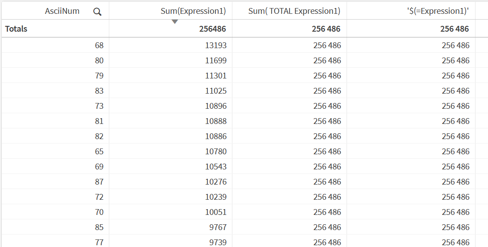

Whenever you need the grand total of a measure inside an expression — as a denominator,
a benchmark, a target — the standard answer is SUM(TOTAL [Field]). It works.
But it duplicates the formula. If your measure changes, you have to track down every
expression that hardcodes it and update each one. There's a cleaner way.
The problem with SUM(TOTAL ...)
Say your master measure Sales is defined as:
SUM({<Status={'Confirmed'}>} Amount)To show each row's share of the total, you write something like:
SUM({<Status={'Confirmed'}>} Amount)
/ SUM(TOTAL {<Status={'Confirmed'}>} Amount)The set analysis is now duplicated — once for the row value, once for the total. Add a filter condition to the master measure later and you have two places to update, not one. Miss one and you've silently broken the ratio.
What $(=) does
The $(=expression) syntax is a dollar-sign expansion that evaluates
the expression once for the entire chart — without applying the current row's dimension
context. The result is a constant: the same number in every cell.
When the expression inside is a master measure label, Qlik evaluates that master measure's full formula at the chart's total level. The dimension you're slicing by (AsciiNum, Customer, Month — whatever it is) is simply not involved. You get the grand total of whatever the master measure calculates.
That makes $(=Sales) functionally identical to
SUM(TOTAL {<Status={'Confirmed'}>} Amount) — but the formula lives in
exactly one place.
Proof
The table below has three columns against the same dimension. All three return the same grand total on every row:

- Sum(Expression1) — the row-level value. Different per dimension value.
- Sum(TOTAL Expression1) — the classic approach. Ignores the dimension, returns the total. Formula is duplicated.
- $(=Expression1) — evaluates the master measure at chart level. Same result. Formula is not duplicated.
'$(=Expression1)' with quotes — that's just
to display the expression text as a literal label rather than evaluating it as the header.
The expression used in the column itself has no quotes.
How to use it
Replace any SUM(TOTAL ...) denominator with $(=YourMasterMeasureName).
The master measure name is whatever label you gave it in the master items panel — used exactly
as written, case-sensitive:
// Before — formula duplicated in two places
SUM({<Status={'Confirmed'}>} Amount)
/ SUM(TOTAL {<Status={'Confirmed'}>} Amount)
// After — master measure referenced once
SUM({<Status={'Confirmed'}>} Amount)
/ $(=Sales)
Now if the definition of Sales changes — new set analysis, a different field,
an added condition — you update the master measure once and every expression using
$(=Sales) reflects it automatically.
Using it in arithmetic — wrap with trim()
When $(=) is embedded inside a larger expression (division, subtraction,
a function argument), wrap it in trim() to guard against whitespace that
can appear in the expansion:
[Sales] / trim('$(=Sales)')
The quotes inside trim() ensure the expansion is treated as a string first,
then trimmed before being used numerically. Without this, edge cases can silently produce
null instead of a number. It's a one-character safeguard worth building into the habit.
One place to update
The practical value compounds the more you use it. A ratio expression, a share-of-total
color gradient, a variance calculation — each one that references $(=Sales)
instead of hardcoding the formula is one fewer place you need to touch when the business
logic changes.
The gradient coloring pattern from the
previous post is exactly this in action —
trim('$(=[Measure])') as the denominator means the color expression automatically
tracks whatever the master measure calculates, with no maintenance required.